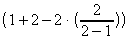
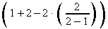
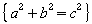

| [zurück] | [Hauptmenü] | [weiter] |
OpenOffice.org Formel
04 - Klammern
Beinahe in jeder nur erdenklichen Formel werden Klammern benötigt. OpenOffice.org's Formelprogramm unterscheidet zwischen mehreren Arten von Klammern:
- { } (strukturelle Klammern): Sie wurden schon erwähnt und dienen dazu, dem Programm mitzuteilen welche Ausdrücke zusammengehören; ob sie z.B. zusammen auf einer Seite eines Bruchstriches sein sollen, etc.
- ( ) (geschwungene Klammern): Sie führen auch die
ordnenden Eigenschaften der
{ }Klammern aus, nur werden sie zusätzlich auch angezeigt . - [ ] (eckige Klammern): Für sie gilt dasselbe wie
für die
( )Klammern. - { } (geschwungene Klammern): Diese sind ein Sonderfall.
Man kann sie nicht eintippen, weil sie dann als strukturelle
Klammern verstanden werden - stattdessen muss man die Befehle
lbracefür "{" undrbracefür "}" verwenden.
Weiters gibt es noch die wichtige Formatierungstechnik, dass die
größe der Klammern auch variabel sein kann. Ich
demonstriere Ihnen am besten an einem einfachen Beispiel, wie man
die Größe einer Klammer mit den vorangestellten
Kommandos left und right ändern
kann. (Wichtig ist dabei, dass korrespondierende Klammern gleich
gekennzeichnet werden müssen und in der selben logischen
Hierachie sein müssen - nur so weiß das Formelprogramm,
wie groß die Klammer sein muss.)
| Kommando-Eingabefeld | Formel |
|---|---|
(1+2-2 cdot (2 over {2-1})) |

|
left (1+2-2 cdot left (2 over {2-1} right
) right ) |

|
left lbrace a^2+b^2=c^2 right
rbrace |

|
| [zurück] | [Hauptmenü] | [weiter] |
© Copyright 2003, Harald Schilly
This documentation is part of "Erste Schritte: OpenOffice.org Textdokument", which is released
under the terms of the PDL.
For full copyright and license info read the index page.